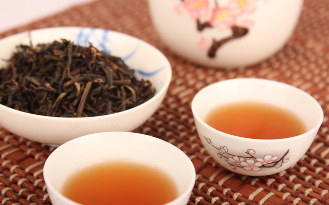

黎平引种“中茶108”成功

日前，笔者从贵州省黎平县茶业局获悉，经过三年的种植长势观察，两年的茶产品市场探询和茶专家们的品鉴，一致认定黎平县引种“中茶108”茶树新品种成功，可推广种植。
据了解，“中茶108”由中国农业科学院茶叶研究所用“龙井43号”茶树品种作为母体通过辐射育种，选育出来的早生、优质、抗病新品种，该品种属灌木型、中叶类、特早生种，属国家级优良茶树品种，是农业部“现代农业产业技术体系”十二五期间的主推品种之一。与“龙井43号” 相比，“中茶108”有四大特点：一是早采2-5天。新春茶一天几个价，越早价格越高，早一天开园早一天收益。二是抵抗炭疽病的能力强。“龙井43号”有易感炭疽病的缺点，而“中茶108”克服了这个缺点。三是芽梢的持嫩性较强。持嫩度好就会延长茶青的采摘时间，就会减少采摘茶青高峰期的劳动强度。四是氨基酸含量较高。茶产品的滋味会更鲜爽，喝起来茶汤味道会更醇爽，苦涩味会感觉减少，会让更多的茶者喜爱。该茶树品种适制扁形茶等名优绿茶，国内许多茶区将该品种作为茶区茶树品种调整互补、换代、提高品质的主要品种来推广。
黎平县自1999年自中国农业科学院茶叶研究所引种“龙井43号”，成功开发出黎平扁形茶以来，“龙井43号”茶树品种很受茶企业、茶农们的青睐，发展迅速。目前，龙井43号茶树品种已成为黎平规模面积最大的茶树品种，且在生产管理中也出现炭疽病严重，持嫩度较差等缺点。如何让黎平的茶树品种配置更加科学、合理？通过中茶所茶专家们的把脉，推荐了“中茶108”品种。2012年3月引种到茅贡乡登阡（地名）进行试验，县茶业局安排人员全程跟踪调查、指导管理，2014年完成3次定型修剪和1个轻修剪，2014年春进行打顶跑采茶青试加工，2015年春正式采摘加工。
通过3年来的观察，发现该茶树品种在黎平生长良好，抗病害的能力和持嫩度比龙井43号强，茶产品滋味鲜爽度较好，是新优良品种，且也是生产加工扁形茶优良茶树品种，对“龙井43号”茶树品种和产品是互补，对黎平扁形茶也是一个有效补充。